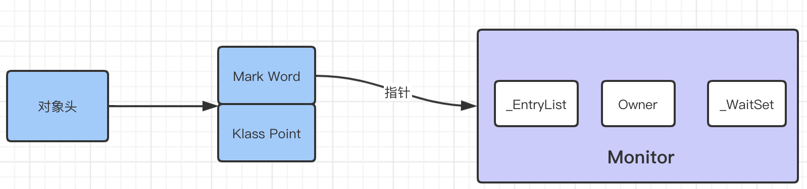
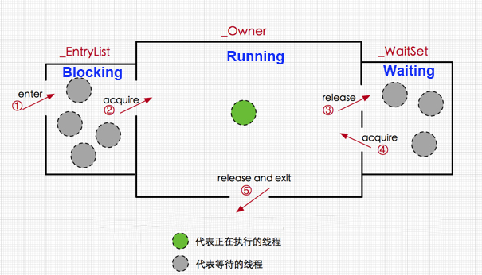
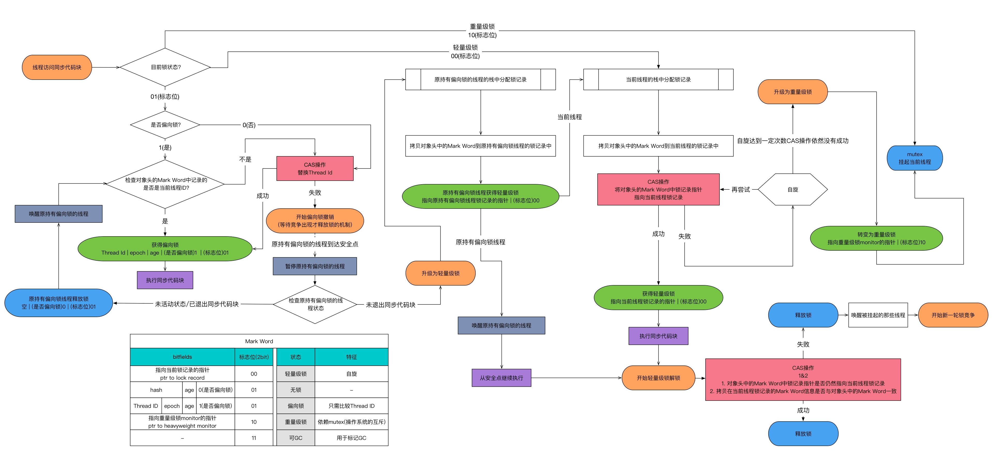

Ch04-Java 之 synchronized
January 13, 2017
synchronized 是 Java 中的一个关键字，主要用于解决 Java 中常见的并发问题（原子性，可见性，有序性）。
1. 常见用法 #
| 修饰对象 | 被修饰后的名称 | 作用范围 | 作用对象 |
|---|---|---|---|
| 代码块 | 同步语句块 | 大括号{}括起来的代码 | 调用这个代码块的对象 |
| 方法 | 同步方法 | 整个方法 | 调用这个方法的对象 |
| 静态的方法 | 整个静态方法 | 该类的所有对象 | |
| 类 | synchronized 后面括号括起来的部分 | 该类的所有对象 |
2. 实现原理 #
编译器会在修饰的代码块前面和后面显式添加 monitorenter，monitorexit。这两个字节码便实际完成加锁和释放锁的功能，这一切主要还是由 Monitor 提供。
2.1 monitor 介绍 #
Monitor 被翻译为监视器或管程，每个 Java 对象都可以关联一个 Monitor 对象，如果使用 synchronized 给对象上锁（重量级）之后，该对象头的 Mark Word 中就被设置指向 Monitor 对象的指针。如果不加 synchronized 的对象不会关联监视器

2.2 monitor 工作原理 #
对于一个 synchronized 修饰的方法 (代码块) 来说：
- 当多个线程同时访问该方法，那么这些线程会先被放进 _EntryList 队列，此时线程处于 blocked 状态；
- 当一个线程获取到了对象的 monitor 后，那么就可以进入 running 状态，执行方法块，此时，ObjectMonitor 对象的 _owner 指向当前线程，_count 加 1 表示当前对象锁被一个线程获取；
- 当 running 状态的线程调用 wait() 方法，那么当前线程释放 monitor 对象，进入 waiting 状态，ObjectMonitor 对象的 _owner 变为 null，_count 减 1，同时线程进入 _WaitSet 队列，直到有线程调用 notify() 方法唤醒该线程，则该线程进入 _EntryList 队列，竞争到锁再进入 _owner 区；
- 如果当前线程执行完毕，那么也释放 monitor 对象，ObjectMonitor 对象的 _owner 变为 null，_count 减 1。

因为监视器锁（monitor）是依赖于底层的操作系统的 Mutex Lock 来实现的，而操作系统实现线程之间的切换时需要从用户态转换到核心态，这个状态之间的转换需要相对比较长的时间，时间成本相对较高，这也是为什么早期的 synchronized 效率低的原因。
庆幸的是在 Java 1.6 之后 Java 官方对从 JVM 层面对 synchronized 较大优化最终提升显著，Java 1.6 之后，为了减少获得锁和释放锁所带来的性能消耗，引入了锁升级的概念。
3. 锁状态 #
| 锁状态 | 说明 |
|---|---|
| 无锁 | 无锁没有对资源进行锁定，所有的线程都能访问并修改同一个资源，但同时只有一个线程能修改成功。 |
| 偏向锁 | 偏向锁是指一段同步代码一直被一个线程所访问，那么该线程会自动获取锁，降低获取锁的代价。 |
| 轻量级锁 | 锁是偏向锁的时候，被另外的线程所访问，偏向锁就会升级为轻量级锁，其他线程会通过自旋的形式尝试获取锁，不会阻塞，从而提高性能。 |
| 重量级锁 | 会对其他线程阻塞 |
锁可以从偏向锁升级到轻量级锁，再升级的重量级锁。但是锁的升级是单向的，也就是说只能从低到高升级，不会出现锁的降级。

锁升级主要体现在 Java 的对象头中有个 MarkWord 字段，它无法手动配置，Java 会自行控制何时选择使用何种锁状态。每一个线程在准备获取共享资源时：
- 检查 MarkWord 里面是不是放的自己的 ThreadId；如果是，表示当前线程是处于“偏向锁”。跳过轻量级锁直接执行同步体；
- 如果 MarkWord 不是自己的 ThreadId，锁升级，这时候，用 CAS 来执行切换，新的线程根据 MarkWord 里面现有的 ThreadId，通知之前线程暂停，之前线程将 Markword 的内容置为空；
- 两个线程都把对象的 HashCode 复制到自己新建的用于存储锁的记录空间，接着开始通过 CAS 操作，把共享对象的 MarKword 的内容修改为自己新建的记录空间的地址的方式竞争 MarkWord；
- 第 3 步中成功执行 CAS 的获得资源，失败的则进入自旋；
- 自旋的线程在自旋过程中，成功获得资源 (即之前获的资源的线程执行完成并释放了共享资源)，则整个状态依然处于轻量级锁的状态，如果自旋失败；
- 进入重量级锁的状态，这个时候，自旋的线程进行阻塞，等待之前线程执行完成并唤醒自己。
4. 锁优化 #
| 锁状态 | 说明 |
|---|---|
| 自旋锁 | 当一个线程尝试获取某个锁时，如果该锁已被其他线程占用，就一直循环检测锁是否被释放，而不是进入线程挂起或睡眠状态。 |
| 适应性自旋锁 | JDK 1.6 引入，自旋的次数不再是固定的，它是由前一次在同一个锁上的自旋时间及锁的拥有者的状态来决定。 |
| 锁消除 | 为了保证数据的完整性，在进行操作时需要对这部分操作进行同步控制，但是在有些情况下，JVM 检测到不可能存在共享数据竞争，JVM 便会对这些同步锁进行锁消除。 |
| 锁粗化 | 将多个连续的加锁、解锁操作连接在一起，扩展成一个范围更大的锁。主要是为了解决一系列的连续加锁解锁操作，导致不必要的性能损耗而引入的优化方案。 |
5. 参考文献 #
6. 附件 #
ObjectMonitor() {
_header = NULL;
_count = 0; // 记录个数，size(_WaitSet) + size(_EntryList)
_waiters = 0,
_recursions = 0; // 记录重入次数
_object = NULL;
_owner = NULL; // 指向持有 ObjectMonitor 对象的线程
_WaitSet = NULL; // 保存 ObjectWaiter 对象列表
_WaitSetLock = 0;
_Responsible = NULL;
_succ = NULL;
_cxq = NULL;
FreeNext = NULL;
_EntryList = NULL; // 处于等待锁 block 状态的线程，会被加入到该列表
_SpinFreq = 0;
_SpinClock = 0;
OwnerIsThread = 0;
}
// 每个等待锁的线程都会被封装成 ObjectWaiter 对象
class ObjectWaiter : public StackObj {
public:
enum TStates { TS_UNDEF, TS_READY, TS_RUN, TS_WAIT, TS_ENTER, TS_CXQ } ;
enum Sorted { PREPEND, APPEND, SORTED } ;
ObjectWaiter * volatile _next;
ObjectWaiter * volatile _prev;
//等待的线程
Thread* _thread;
jlong _notifier_tid;
ParkEvent * _event;
volatile int _notified ;
volatile TStates TState ;
Sorted _Sorted ; // List placement disposition
bool _active ; // Contention monitoring is enabled
};